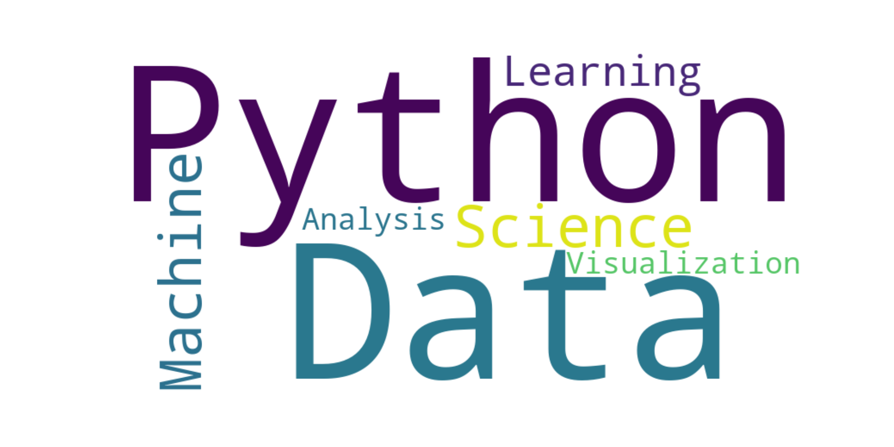

Una vez obtenidos los datos debemos analizarlos. Tanto R como Python incluyen librerías para el análisis estadístico como podrían realizarse en programas con los que estamos más familiarizados como son SPSS, Stagrapchis o Stata.
Sin embargo, como recordarás, nuestros lenguajes de programación son de código abierto y colaborativos. Gracias a esto, la versatilidad que tienen para incluir todo tipo de análisis estadísticos es muy alta. Cualquier procedimiento que se desarrolle puede ser escrito en una librería y ofrecido de forma gratuita para su uso en R y Python sin esperar a que las empresas correspondientes a los programas de análisis estadísticos clásicos los incluyan y hasta que la empresa proveedora (Osakidetza en este caso) los adquiera. Es decir, no existen intermediarios, las pruebas estadísticas van desde los desarrolladores hasta los usuarios.
A continuación te mostramos algunos ejemplos de análisis estadísticos que puedes realizar con nuestros lenguajes de programación.
Análisis estadísticos clásicos
Por supuesto, siempre podremos realizar análisis estadísticos clásicos. A continuación te mostramos algunos ejemplos:
# ============================================# Análisis Estadístico en R - Ejemplo# ============================================# 1. Generamos de datos simuladosset.seed(123) # Fijamos la semilla para reproducibilidad# Creamos dos grupos con datos simuladosgrupo_A <-rnorm(50, mean =70, sd =10) # Grupo A: media 70, desviación estándar 10grupo_B <-rnorm(50, mean =75, sd =12) # Grupo B: media 75, desviación estándar 12# Combinamos los datos en un dataframedatos <-data.frame(Grupo =rep(c("A", "B"), each =50),Valor =c(grupo_A, grupo_B))# ============================================# 2. Análisis descriptivo# ============================================# Resumen estadístico generalsummary(datos)
Grupo Valor
Length:100 Min. : 47.29
Class :character 1st Qu.: 66.42
Mode :character Median : 73.47
Mean : 73.55
3rd Qu.: 79.57
Max. :101.25
# Resumen por grupolibrary(dplyr)resumen_por_grupo <- datos %>%group_by(Grupo) %>%summarise(Media =mean(Valor),Mediana =median(Valor),Desviacion_Estandar =sd(Valor),Minimo =min(Valor),Maximo =max(Valor) )print(resumen_por_grupo)
# A tibble: 2 × 6
Grupo Media Mediana Desviacion_Estandar Minimo Maximo
<chr> <dbl> <dbl> <dbl> <dbl> <dbl>
1 A 70.3 69.3 9.26 50.3 91.7
2 B 76.8 76.8 10.9 47.3 101.
# ============================================# 3. Visualización de datos# ============================================library(ggplot2)# Boxplot para comparar los gruposggplot(datos, aes(x = Grupo, y = Valor, fill = Grupo)) +geom_boxplot() +labs(title ="Comparación de Grupos", x ="Grupo", y ="Valor") +theme_minimal()
# Histograma para cada grupoggplot(datos, aes(x = Valor, fill = Grupo)) +geom_histogram(alpha =0.6, position ="identity", bins =15) +labs(title ="Distribución de Valores por Grupo", x ="Valor", y ="Frecuencia") +theme_minimal()
# ============================================# 4. Pruebas de hipótesis# ============================================# Prueba t de Student para comparar las medias de los dos grupost_test <-t.test(grupo_A, grupo_B)print(t_test)
Welch Two Sample t-test
data: grupo_A and grupo_B
t = -3.1766, df = 95.593, p-value = 0.002007
alternative hypothesis: true difference in means is not equal to 0
95 percent confidence interval:
-10.42039 -2.40534
sample estimates:
mean of x mean of y
70.34404 76.75690
# Verificamos si los datos cumplen con la normalidad (Shapiro-Wilk test)shapiro_A <-shapiro.test(grupo_A)shapiro_B <-shapiro.test(grupo_B)print(shapiro_A)
Shapiro-Wilk normality test
data: grupo_A
W = 0.98928, p-value = 0.9279
print(shapiro_B)
Shapiro-Wilk normality test
data: grupo_B
W = 0.99073, p-value = 0.9618
# Verificamos la homogeneidad de varianzas (Prueba de Levene)library(car)levene_test <-leveneTest(Valor ~ Grupo, data = datos)print(levene_test)
Levene's Test for Homogeneity of Variance (center = median)
Df F value Pr(>F)
group 1 0.5309 0.4679
98
# ============================================# Resultados e interpretación# ============================================cat("\nResultados del análisis:\n")
Resultados del análisis:
cat("1. Resumen descriptivo:\n")
1. Resumen descriptivo:
print(resumen_por_grupo)
# A tibble: 2 × 6
Grupo Media Mediana Desviacion_Estandar Minimo Maximo
<chr> <dbl> <dbl> <dbl> <dbl> <dbl>
1 A 70.3 69.3 9.26 50.3 91.7
2 B 76.8 76.8 10.9 47.3 101.
cat("\n2. Prueba t de Student:\n")
2. Prueba t de Student:
print(t_test)
Welch Two Sample t-test
data: grupo_A and grupo_B
t = -3.1766, df = 95.593, p-value = 0.002007
alternative hypothesis: true difference in means is not equal to 0
95 percent confidence interval:
-10.42039 -2.40534
sample estimates:
mean of x mean of y
70.34404 76.75690
Levene's Test for Homogeneity of Variance (center = median)
Df F value Pr(>F)
group 1 0.5309 0.4679
98
Metanaálisis
Nuestros lenguajes de programación también permiten realizar metaanalisis clásicos, en red, umbrella, metaregresiones… A continuación os dejamos un ejemplos básico:
# Instalar y cargar el paquete metaforlibrary(metafor)
Warning: package 'metafor' was built under R version 4.4.3
Cargando paquete requerido: Matrix
Cargando paquete requerido: metadat
Warning: package 'metadat' was built under R version 4.4.3
Cargando paquete requerido: numDeriv
Loading the 'metafor' package (version 4.8-0). For an
introduction to the package please type: help(metafor)
Adjuntando el paquete: 'metafor'
The following object is masked from 'package:car':
vif
# Crear un conjunto de datos de ejemplo# Supongamos que tenemos 5 estudios con tamaños de efecto (yi) y varianzas (vi)data <-data.frame(study =c("Estudio 1", "Estudio 2", "Estudio 3", "Estudio 4", "Estudio 5"),yi =c(0.2, 0.5, -0.1, 0.3, 0.4), # Tamaños de efectovi =c(0.04, 0.03, 0.05, 0.02, 0.04) # Varianzas)# Visualizar los datosprint(data)
study yi vi
1 Estudio 1 0.2 0.04
2 Estudio 2 0.5 0.03
3 Estudio 3 -0.1 0.05
4 Estudio 4 0.3 0.02
5 Estudio 5 0.4 0.04
# Realizar el meta-análisis (modelo de efectos aleatorios)meta_result <-rma(yi = yi, vi = vi, data = data, method ="REML")# Resumen de los resultados del meta-análisisprint(meta_result)
Random-Effects Model (k = 5; tau^2 estimator: REML)
tau^2 (estimated amount of total heterogeneity): 0.0016 (SE = 0.0241)
tau (square root of estimated tau^2 value): 0.0394
I^2 (total heterogeneity / total variability): 4.42%
H^2 (total variability / sampling variability): 1.05
Test for Heterogeneity:
Q(df = 4) = 5.0217, p-val = 0.2851
Model Results:
estimate se zval pval ci.lb ci.ub
0.2902 0.0829 3.5023 0.0005 0.1278 0.4527 ***
---
Signif. codes: 0 '***' 0.001 '**' 0.01 '*' 0.05 '.' 0.1 ' ' 1
# Crear un forest plot para visualizar los resultadosforest(meta_result, slab = data$study)
# Funnel plot para evaluar sesgos de publicaciónfunnel(meta_result)
# Análisis de heterogeneidadcat("Heterogeneidad:\n")
Heterogeneidad:
cat(paste("Q =", meta_result$QE, ", p =", meta_result$QEp, "\n"))
Nuestros lenguajes de programación permiten realizar análisis geoespaciales, dándonos la capacidad de realizar estudios epidemiológicos complejos. A continuación os mostramos un ejemplo de ello:
# Cargamos las bibliotecas necesariaslibrary(sf)library(ggplot2)library(dplyr)# Descargamos los datos geoespaciales del País Vascoeuskadi <-st_read("mapa/TERRITORIOS_5000_ETRS89.shp")
Reading layer `TERRITORIOS_5000_ETRS89' from data source
`C:\Users\Aprai\Desktop\Trabajo\Osakidetza\R y Python en Osakidetza\mapa\TERRITORIOS_5000_ETRS89.shp'
using driver `ESRI Shapefile'
Simple feature collection with 3 features and 5 fields
Geometry type: MULTIPOLYGON
Dimension: XY
Bounding box: xmin: 463435.2 ymin: 4702192 xmax: 603082.2 ymax: 4811579
Projected CRS: ETRS89 / UTM zone 30N
# Creamos datos simulados de poblaciónpoblacion_data <-data.frame(provincia =c("ARABA / ÁLAVA", "BIZKAIA", "GIPUZKOA"),poblacion =c(331549, 1159443, 727121))# Unimos los datos de población con los datos geoespacialeseuskadi_poblacion <- euskadi %>%left_join(poblacion_data, by =c("TERRITORIO"="provincia"))# Creamos el mapamapa_euskadi <-ggplot(data = euskadi_poblacion) +geom_sf(aes(fill = poblacion)) +scale_fill_viridis_c(name ="Población", labels = scales::comma_format()) +labs(title ="Población por provincia en el País Vasco",subtitle ="Datos simulados - 2025",caption ="Fuente: Datos simulados") +theme_minimal() +theme(plot.title =element_text(hjust =0.5),plot.subtitle =element_text(hjust =0.5))# Mostramos el mapaprint(mapa_euskadi)
Minería de texto
En la actualidad, la minería y análisis de texto se encuentra en auge debido a la información que se puede obtener. Nuestros lenguajes de programación también tienen la capacidad de realizar dichos análisis. A continuación te presentamos un pequeño ejemplo:
library(tm)library(wordcloud)library(RColorBrewer)# ============================================# 1. Crear un conjunto de datos de texto# ============================================# Ejemplo: textos simuladostextos <-c("El análisis de minería de texto permite extraer información útil de documentos.","Las nubes de palabras son una forma visual atractiva para representar frecuencias.","R es un lenguaje poderoso para realizar minería de texto y análisis estadístico.","La limpieza del texto es un paso fundamental antes del análisis.","Los algoritmos de minería de texto pueden identificar patrones en grandes volúmenes de datos.")# Crear un Corpus (estructura para manejar texto)corpus <-Corpus(VectorSource(textos))# ============================================# 2. Limpieza del texto# ============================================corpus <- corpus %>%tm_map(content_transformer(tolower)) %>%# Convertir a minúsculastm_map(removePunctuation) %>%# Eliminar puntuacióntm_map(removeNumbers) %>%# Eliminar númerostm_map(removeWords, stopwords("spanish")) %>%# Eliminar palabras vacías (stopwords) en españoltm_map(stripWhitespace) # Eliminar espacios en blanco adicionales# ============================================# 3. Análisis de frecuencias# ============================================# Crear una matriz de términos (Term-Document Matrix)tdm <-TermDocumentMatrix(corpus)# Convertir la matriz a un formato más manejablematriz <-as.matrix(tdm)# Calcular la frecuencia total de cada palabrafrecuencias <-sort(rowSums(matriz), decreasing =TRUE)# Crear un dataframe con las palabras y sus frecuenciasdf_frecuencias <-data.frame(palabra =names(frecuencias),frecuencia = frecuencias)print(head(df_frecuencias)) # Mostrar las palabras más frecuentes
# ============================================# 4. Generar la nube de palabras# ============================================set.seed(123) # Fijar semilla para reproducibilidadwordcloud(words = df_frecuencias$palabra,freq = df_frecuencias$frecuencia,min.freq =1, # Frecuencia mínima para incluir palabrasmax.words =100, # Número máximo de palabras a mostrarrandom.order =FALSE, # Ordenar por frecuencia (no aleatorio)colors =brewer.pal(8, "Dark2") # Paleta de colores atractiva)
# ============================================# Resultados e interpretación# ============================================cat("\nLas palabras más frecuentes son:\n")
Los algoritmos de redes neuronales (muy utilizados en Inteligencia Artificial) se encuentran en nuestro día a día. Dichos algoritmos también se pueden realizar con nuestros lenguajes de programación. A continuación tienes un pequeño ejemplo:
# weights: 26
initial value 259.012592
iter 10 value 0.986480
iter 20 value 0.225311
iter 30 value 0.139585
iter 40 value 0.098961
iter 50 value 0.038200
iter 60 value 0.022839
iter 70 value 0.013774
iter 80 value 0.008530
iter 90 value 0.005172
iter 100 value 0.003044
final value 0.003044
stopped after 100 iterations
plotnet(mod)

¡Esto no es el final!
Te hemos mostrado algunos ejemplos de uso de nuestros lenguajes de programación. Sin embargo, existen mucho mas: técnicas de muestreo y remuestro, Algoritmo supervisados y no supervisados…